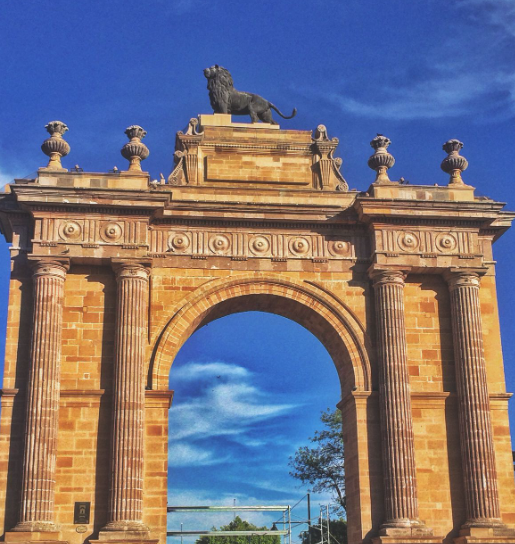
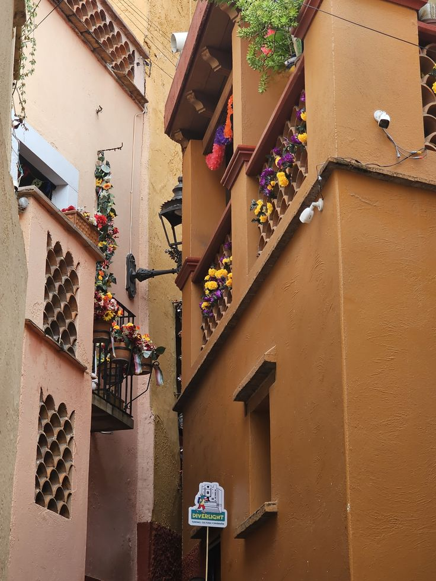

tour • momias y túneles

Ciudad vibrante, llena de historia, cultura y sabores que te sorprenderán.Al visitar Guanajuato, hay varios puntos turísticos que valen la pena visitar: lugares que se destacan por tener una historia misteriosa, relatos que año con año atraen a nuevos turistas para que lo conozcan.

Descubre el patrimonio cultural de Guanajuato .



Escríbenos y te recomendamos tu lugar turistico.